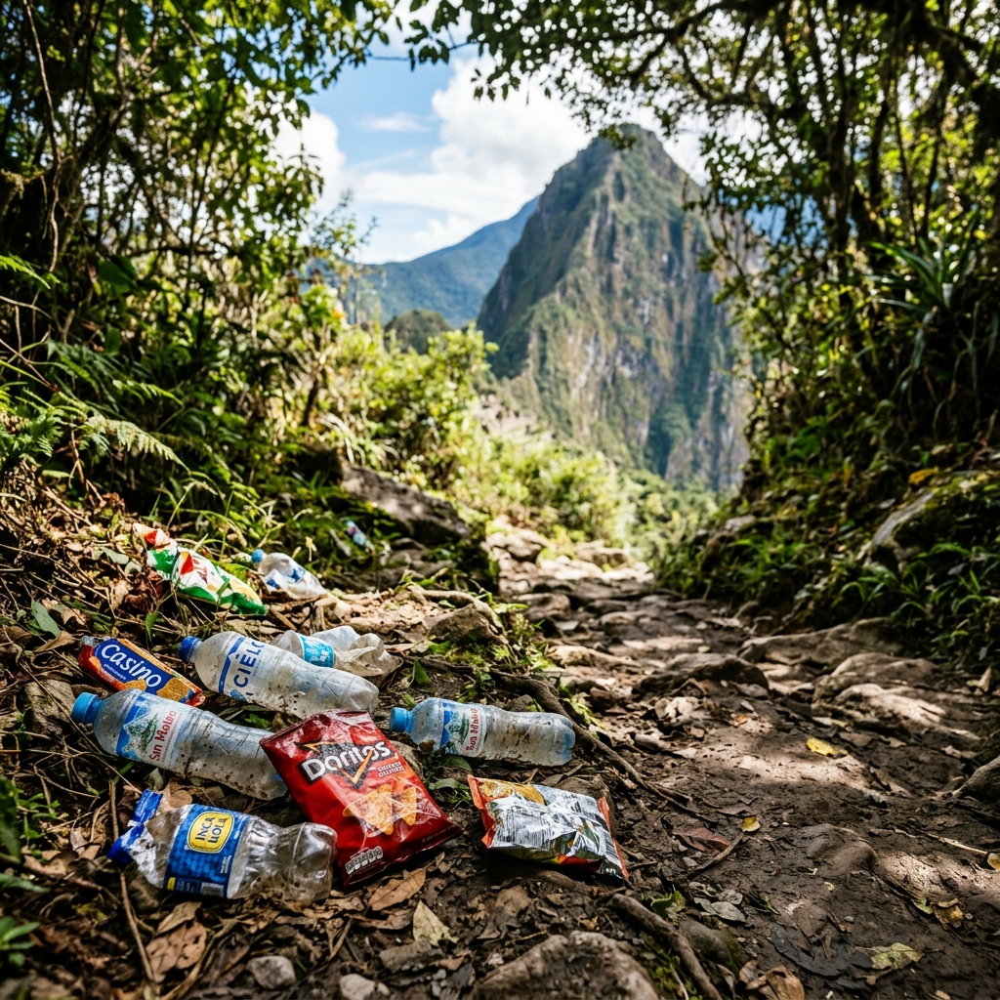

Alerta: La Crisis de las Basuras

Una realidad que no podemos ignorar
El sendero de Monserrate, compuesto por 1.605 escalones, es recorrido por miles de feligreses y deportistas cada semana. Lamentablemente, este esfuerzo físico a menudo viene acompañado de un profundo descuido ambiental.
Principales residuos encontrados:
- Botellas de agua y bebidas energéticas (PET).
- Envolturas de snacks (plásticos metalizados).
- Vasos desechables y colillas de cigarrillo.
¿Por qué falla el sistema actual?
Si bien existen canecas distribuidas a lo largo del recorrido (especialmente en puntos de descanso o "falsos planos"), estas suelen desbordarse rápidamente en días de alta afluencia. Además, el cansancio físico lleva a muchos visitantes a justificar el abandono de residuos en los laterales del camino, asumiendo que "alguien más lo recogerá".